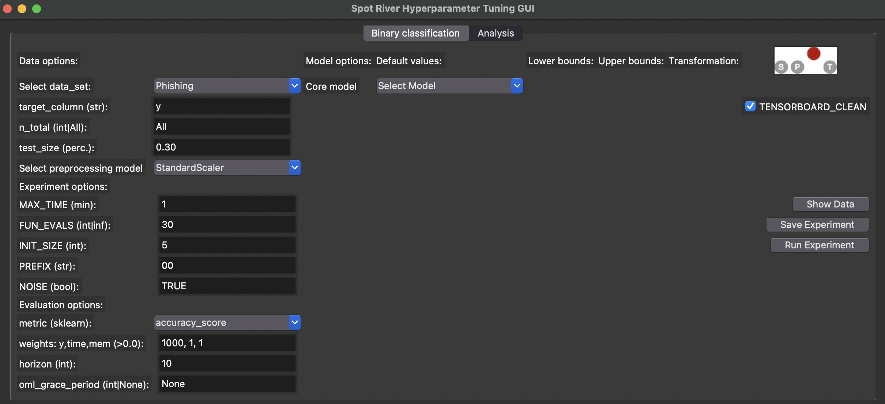

17 The spotRiver Hyperparameter Tuning GUI
17.1 Starting the GUI
The GUI can be started by executing the spotRiverGUI.py file in the spotGUI/spotRiverGUI directory.
>> python spotRiverGUI.py
After the GUI window has opened, the user can select the task. Currently, Binary Classification is available. Further tasks like Regression will be available soon.
Depending on the task, the user can select the data set, the preprocessing model, the metric, and the online machine learning model.
17.2 Binary Classification
If the Binary Classification task is selected, the user can select pre-specified data sets from the Data drop-down menu.
17.2.1 River Data Sets
The following data sets from the river package are available:
Bananas: An artificial dataset where instances belongs to several clusters with a banana shape.There are two attributes that correspond to the x and y axis, respectively. More: https://riverml.xyz/dev/api/datasets/Bananas/.CreditCard: Credit card frauds. The datasets contains transactions made by credit cards in September 2013 by European cardholders. This dataset presents transactions that occurred in two days, where we have 492 frauds out of 284,807 transactions. The dataset is highly unbalanced, the positive class (frauds) account for 0.172% of all transactions. It contains only numerical input variables which are the result of a PCA transformation. Unfortunately, due to confidentiality issues, we cannot provide the original features and more background information about the data. FeaturesV1,V2,…,V28are the principal components obtained with PCA, the only features which have not been transformed with PCA are ‘Time’ and ‘Amount’. Feature ‘Time’ contains the seconds elapsed between each transaction and the first transaction in the dataset. The feature ‘Amount’ is the transaction Amount, this feature can be used for example-dependant cost-sensitive learning. Feature ‘Class’ is the response variable and it takes value 1 in case of fraud and 0 otherwise. More: https://riverml.xyz/dev/api/datasets/CreditCard/.Elec2: Electricity prices in New South Wales. This is a binary classification task, where the goal is to predict if the price of electricity will go up or down. This data was collected from the Australian New South Wales Electricity Market. In this market, prices are not fixed and are affected by demand and supply of the market. They are set every five minutes. Electricity transfers to/from the neighboring state of Victoria were done to alleviate fluctuations. More: https://riverml.xyz/dev/api/datasets/Elec2/.Higgs: The data has been produced using Monte Carlo simulations. The first 21 features (columns 2-22) are kinematic properties measured by the particle detectors in the accelerator. The last seven features are functions of the first 21 features; these are high-level features derived by physicists to help discriminate between the two classes. More: https://riverml.xyz/dev/api/datasets/Higgs/.HTTP: HTTP dataset of the KDD 1999 cup. The goal is to predict whether or not an HTTP connection is anomalous or not. The dataset only contains 2,211 (0.4%) positive labels. More: https://riverml.xyz/dev/api/datasets/HTTP/.Phishing: Phishing websites. This dataset contains features from web pages that are classified as phishing or not.https://riverml.xyz/dev/api/datasets/Phishing/
17.2.2 User Data Sets
Besides the river data sets described in Section 17.2.1, the user can also select a user-defined data set. Currently, comma-separated values (CSV) files are supported. Further formats will be supported soon. The user-defined CSV data set must be a binary classification task with the target variable in the last column. The first row must contain the column names. If the file is copied to the subdirectory userData, the user can select the data set from the Data drop-down menu.
As an example, we have provided a CSV-version of the Phishing data set. The file is located in the userData subdirectory and is called PhishingData.csv. It contains the following columns:
empty_server_form_handler,popup_window,https,request_from_other_domain,anchor_from_other_domain,is_popular,long_url,age_of_domain,ip_in_url,is_phishing
0.0,0.0,0.0,0.0,0.0,0.5,1.0,1,1,1
1.0,0.0,0.5,0.5,0.0,0.5,0.0,1,0,1
0.0,0.0,1.0,0.0,0.5,0.5,0.0,1,0,1
0.0,0.0,1.0,0.0,0.0,1.0,0.5,0,0,1Based on the required format, we can see that target_column is the last column, here: is_phishing.
17.2.3 Stream Data Sets
Forthcoming versions of the GUI will support stream data sets, e.g, the Friedman data set as described in Bartz-Beielstein (2024a). The Friedman-Drift data was also used in the hyperparameter tuning study in Bartz-Beielstein (2024b).
17.2.4 Data Set Options
Currently, the user can select the following parameters for the data sets:
target_column: The target column.n_total: The total number of instances. Since some data sets are quite large, the user can select a subset of the data set by specifying then_totalvalue.test_size: The size of the test set in percent (0.0-1.0). The training set will be1 - test_size.
To compare different data scaling methods, the user can select the preprocessing model from the Preprocessing drop-down menu. Currently, the following preprocessing models are available:
StandardScaler: Standardize features by removing the mean and scaling to unit variance.MinMaxScaler: Scale features to a range.None: No scaling is performed.
The spotRiverGUI will not provide sophisticated data preprocessing methods. We assume that the data was preprocessed before it is copied into the userData subdirectory.
17.3 Regression
Regression tasks will be supported soon. The same workflow as for the binary classification task will be used, i.e., the user can select the data set, the preprocessing model, the metric, and the online machine learning model.
17.4 Experiment Options
Currently, the user can select the following options for specifying the experiment duration:
MAX_TIME: The maximum time in minutes for the experiment.FUN_EVALS: The number of function evaluations for the experiment.
If the MAX_TIME is reached or FUN_EVALS OML-models are evaluated, the experiment will be stopped.
- The initial design will always be evaluated before one of the stopping criteria is reached.
- If the initial design is very large or the model evaluations are very time-consuming, the runtime will be larger than the
MAX_TIMEvalue.
Based on the INIT_SIZE, the number of hyperparameter configurations for the initial design can be specified. The initial design is evaluated before the first surrogate model is build. A detailed description of the initial design and the surrogate model based hyperparameter tuning can be found in Bartz-Beielstein (2024a) and in Bartz-Beielstein and Zaefferer (2022).
The PREFIX parameter can be used to specify the experiment name.
The spotPython hyperparameter tuning program allows the user to specify several options for the hyperparameter tuning process. The spotRiverGUI will support more options in future versions. Currently, the user can specify whether the outcome from the experiment is noisy or deterministic. The corresponding parameter is called NOISE. The reader is referred to Bartz-Beielstein (2024b) and to the chapter “Handling Noise” (https://sequential-parameter-optimization.github.io/Hyperparameter-Tuning-Cookbook/013_num_spot_noisy.html) for further information about the NOISE parameter.
17.5 Evaluation Options
The user can select one of the following evaluation metrics for binary classification tasks from the metric drop-down menu:
accuracy_scorecohen_kappa_scoref1_scorehamming_losshinge_lossjaccard_scorematthews_corrcoefprecision_scorerecall_scoreroc_auc_scorezero_one_loss
These metrics are based on the scikit-learn module, which implements several loss, score, and utility functions to measure classification performance, see https://scikit-learn.org/stable/modules/model_evaluation.html#classification-metrics. spotRiverGUI supports metrics that are computed from the y_pred and the y_true values. The y_pred values are the predicted target values, and the y_true values are the true target values. The y_pred values are generated by the online machine learning model, and the y_true values are the true target values from the data set.
- Some metrics are minimized, and some are maximized. The
spotRiverGUIwill support the user in selecting the correct metric based on the task. For example, theaccuracy_scoreis maximized, and thehamming_lossis minimized. The user can select the metric andspotRiverGUIwill automatically determine whether the metric is minimized or maximized.
In addition to the evaluation metric results, spotRiver considers the time and memory consumption of the online machine learning model. The spotRiverGUI will support the user in selecting the time and memory consumption as additional evaluation metrics. By modifying the weight vector, which is shown in the weights: y, time, mem field, the user can specify the importance of the evaluation metrics. For example, the weight vector 1,0,0 specifies that only the y metric (e.g., accuracy) is considered. The weight vector 0,1,0 specifies that only the time metric is considered. The weight vector 0,0,1 specifies that only the memory metric is considered. The weight vector 1,1,1 specifies that all metrics are considered.
- The specification of adequate weights is highly problem dependent.
- There is no generic setting that fits to all problems.
As described in Bartz-Beielstein (2024a), a prediction horizon is used for the comparison of the online-machine learning algorithms. The horizon can be specified in the spotRiverGUI by the user and is highly problem dependent.
The spotRiverGUI uses the eval_oml_horizon method from the spotRiver package, which evaluates the online-machine learning model on a rolling horizon basis.
In addition to the horizon value, the user can specify the oml_grace_period value. During the oml_grace_period, the OML-model is trained on the (small) training data set. No predictions are made during this initial training phase, but the memory and computation time are measured. Then, the OML-model is evaluated on the test data set using a given (sklearn) evaluation metric. The default value of the oml_grace_period is horizon. For convenience, the value horizon is also selected when the user specifies the oml_grace_period value as None.
- If the
oml_grace_periodis set to the size of the training data set, the OML-model is trained on the entire training data set and then evaluated on the test data set using a given (sklearn) evaluation metric. - This setting might be “unfair” in some cases, because the OML-model should learn online and not on the entire training data set.
- Therefore, a small data set is recommended for the
oml_grace_periodsetting and the predictionhorizonis a recommended value for theoml_grace_periodsetting. The reader is referred to Bartz-Beielstein (2024a) for further information about theoml_grace_periodsetting.
17.6 Starting a New Experiment
An experiment can be started by clicking on the Run Experiment button. The GUI calls run_spot_river_experiment from spotRiver.tuner.run.py. Output will be shown in the shell window from which the GUI was started.
17.7 Starting and Stopping Tensorboard
Tensorboard is automatically started when an experiment is started. The tensorboard process can be observed in a browser by opening the http://localhost:6006 page.
spotPython.utils.tensorboard provides the methods start_tensorboard and stop_tensorboard to start and stop tensorboard as a background process. These will be used in future versions of the GUI to start and stop tensorboard. Currently, only the start_tensorboard method is used to start tensorboard as a background process.
17.8 Analysis
17.9 Internal Methods
The spotriver GUI uses the following internal methods:
run_spot_river_experimentfun_oml_horizonevaluate_modeleval_oml_horizon
17.9.1 The run_spot_river_experiment Method
run_spot_river_experiment calls the tuner spot after processing the following steps:
- Generate an experiment name.
- Initialize the
fun_controldictionary. - Select the data set based on the
data_setparameter and generate a data frame. - Splits the data into training and test sets.
- Sets the oml_grace_period parameter.
- Select the preprocessing model based on the
prepmodelparameter. - Sets the weights for the evaluation function and the weight coeffient.
- Loads the coremodel based on the
coremodelparameter with hyperparameters set to the values specified in theRiverHyperDictdictionary. - Determines the default hyperparameters.
- Selects the evaluation function:
HyperRiver.fun_oml_horizon. - Determines hyperparameter types, names, lower and upper bounds for the
spottuner. - Starts tensorboard as a background process.
- Starts the
spottuner.
When the tuner is finished, the following steps are performed:
- The tensorboard process is terminated.
- The spot_tuner object and the
fun_controldictionary are returned.
After the tuner is finished, the following information is available:
The run_spot_river_experiment method is located in spotRiver.tuner.run.py and is called by the GUI. It calls the fun_oml_horizon evaluation function and the spot tuner.
17.9.2 The fun_oml_horizon Method
The fun_oml_horizon method is located in spotRiver.hyperriver.py file. It calls the evaluate_model method, which in turn calls the eval_oml_horizon method from the spotRiver.evaluation.eval_bml.py file.